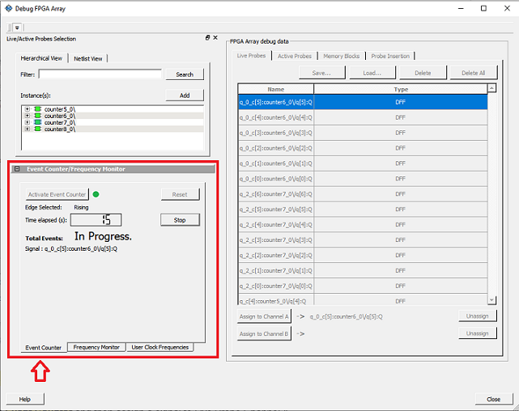
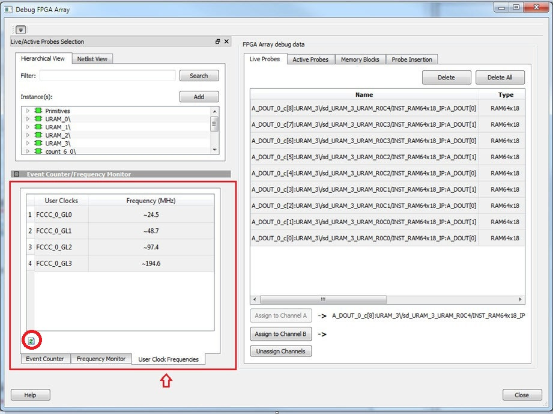

13.3.5 Frequently Asked Questions
(Ask a Question)The following topics describe frequently asked questions about SmartDebug.
13.3.5.1 SmartDebug FAQs for PolarFire
(Ask a Question)13.3.5.1.1 How Do I Monitor a Static or Pseudo-static Signal?
(Ask a Question)To monitor a static or pseudo-static signal:
- Add the signal to the Active Probes tab.
-
Select the signal in the Active Probes tab, right click,
and choose Poll.

-
In the Pseudo-static Signal Polling dialog box, choose a value in Polling Setup
and click Start Polling.

13.3.5.1.2 How Do I Force a Signal to a New Value?
(Ask a Question)To force a signal to a new value:
- In the SmartDebug window, click Debug FPGA Array.
- Click the Active Probes tab.
-
Select the signal from the
selection panel and add it to Active Probes tab.

- Click Read Active Probe to read the value.
- In the Write Value column, enter the value to write to the signal, and then click Write Active Probes.
13.3.5.1.3 How Do I Count the Transitions on a Signal?
(Ask a Question)If FHB IP is auto-instantiated in the design, you can use the Event Counter in the Live Probes tab to count the transitions on a signal. For more information, see Event Counter.
To count the transitions on a signal:
- Assign the desired signal to Live Probe Channel A.
-
Click the Event
Counter tab and select the Activate Event
Counter check-box.

13.3.5.1.4 How Do I Monitor or Measure a Clock?
(Ask a Question)You can monitor a clock signal from the Live Probe tab when the design is synthesized and compiled with FHB Auto Instantiation turned on in the Project Settings dialog box.
In the Live Probe tab, SmartDebug allows you to:
-
Measure all the FABCCC GL clocks
by clicking the User Clock Frequencies tab, as shown in
the following figure.

-
You can monitor frequencies of any probe points by:
- Assigning the desired signal to the Live Probe Channel A.
- Selecting the
Frequency Monitor tab as shown in the
following figure.

- Selecting the Activate Frequency Meter check box.
13.3.5.1.5 How Do I Perform Simple SmartBERT Tests?
(Ask a Question)You can perform SmartBERT tests using the Debug Transceiver option in SmartDebug.
To perform a SmartBERT test, in the SmartBERT page of the Debug Transceiver dialog box, select to run a PRBS test on-die or off-die with EQ-NEAREND checked or unchecked. For more information, see 13.3.3.2.2.3SmartBERT.
To perform a SmartBERT test, in the Smart BERT page of the Debug Transceiver dialog box, select your options and click Start to run a Smart BERT test on-die or off-die with EQ-NEAREND checked or unchecked. For more information, see 13.3.3.2.2.3SmartBERT.
13.3.5.1.6 How Do I Read LSRAM or USRAM Content?
(Ask a Question)To read RAM content:
- In the Debug FPGA Array dialog box, click the Memory Blocks tab.
- Select the memory block to be read from the
selection panel on the left of the window.

An L in the icon next to the block name indicates that it is a logical block, and a P in the icon indicates that it is a physical block. A logical block displays three fields in the Memory Blocks tab: User Design Memory Blocks, Data Width, and Port Used. A physical block displays two fields in the Memory Blocks tab: User Design Memory Block and Data Width.
-
Add the block in one of the following ways:
- Click Select.
- Right click and choose Add.
- Drag the block to the Memory Blocks tab.
-
Click Read Block to read the content of the block.

For more information, see Memory Blocks .
13.3.5.1.7 How Do I Change the Content of LSRAM or USRAM?
(Ask a Question)To change the content of LSRAM or USRAM:
- In the SmartDebug window, click Debug FPGA Array.
- Click the Memory Blocks tab.
-
Select the memory block from the selection panel.
An L in the icon next to the block name indicates that it is a logical block, and a P in the icon indicates that it is a physical block. A logical block displays three fields in the Memory Blocks tab: User Design Memory Blocks, Data Width, and Port Used. A physical block displays two fields in the Memory Blocks tab: User Design Memory Block and Data Width.
-
Add the memory block in one of the following ways:
- Click Select.
- Right click and choose Add.
- Drag the block to the Memory Blocks tab.
- Click Read Block. The memory content matrix appears.
- Select the memory cell value that you want to change and update the value.
-
Click Write Block to write to the device.

For more information, see Memory Blocks .
13.3.5.1.8 How Do I Read the Health Check of the Transceiver?
(Ask a Question)You can read the transceiver health check using the following Debug Transceiver options:
-
Review the Configuration
Report, which returns Tx PMA Ready, Rx PMA Ready, TxPLL status, and
RxPLL status. For the transceiver to function correctly, all four should be
green. The Configuration Report can be found in the Debug TRANSCEIVER dialog box
under Configuration Report. For more information, see Debug
Transceiver.
Figure 13-182.Debug Transceiver 
- Run the SmartBERT Test, with EQ-NEAR END checked or with external loopback connection from Tx to Rx on selected lanes. This should result in 0 errors in the Cumulative Error Count column. For more information, see SmartBERT.
13.3.5.2 SmartDebug FAQs for SmartFusion 2, IGLOO 2, and RTG4
(Ask a Question)The following topics contains frequently asked questions related to using SmartDebug with SmartFusion 2, IGLOO 2, and RTG4.
13.3.5.2.1 Embedded Flash Memory (NVM) - Failure when Programming/Verifying
(Ask a Question)If the Embedded Flash Memory failed verification when executing the PROGRAM_NVM, VERIFY_NVM or PROGRAM_NVM_ACTIVE_ARRAY action, the failing page may be corrupted. To confirm and address this issue:
- In the Inspect Device window click View Flash Memory Content.
- Select the Flash Memory block and
client (or page range) to retrieve from the device:
- Click Read from Device; the retrieved data appears in the lower part of the window.
- Click View
Detailed Status.Note: You can use the
check_flash_memoryandread_flash_memoryTcl commands to perform diagnostics similar to the preceding commands. - To reset the corrupted NVM
pages, either re-program the pages with your original data or zero-out the
pages by using the Tcl command
recover_flash_memory.
If the Embedded Flash Memory failed verification when executing a VERIFY_NVM or VERIFY_NVM_ACTIVE_ARRAY action, the failure may be due to the change of content in your design. To confirm this, repeat te preceding steps.
13.3.5.2.2 Analog System Not Working as Expected
(Ask a Question)If the Analog System is not working correctly, it may be due the following:
- System supply issue. To troubleshoot:
- Physically verify that all the supplies are properly connected to the device and they are at the proper level. Then confirm by running the Device Status.
- Physically verify that the relevant channels are correctly connected to the device.
- Analog system is not properly configured. You can confirm this by examining the Analog System.
13.3.5.2.3 ADC Not Sampling the Correct Value
(Ask a Question)If the ADC is sampling all zero values then the wrong analog pin may be connected to the system, or the analog pin is disconnected. If that is not the case and the ADC is not sampling the correct value, it may be due to the following:
- System supply issues: Run the device status to confirm.
- Analog system is not configured at all: To confirm, read out the ACM configuration and verify if the ACM content is all zero.
- Analog system is not configured correctly: To
confirm:
- Read out the ACM configuration and verify that the configuration is as expected.
- Once analog block configuration has been confirmed, you can use the
sample_analog_channelTcl command for debug sampling of the analog channel with user-supplied sampling parameters. - If you have access to your Analog System Builder settings project (<Libero IDE project>/Smartgen/AnalogBlock), you may use the compare function provided by the tool.
13.3.5.2.4 How Do I Unlock the Device Security So That I Can Debug?
(Ask a Question)You must provide the PDB file with a User Pass Key to unlock the device and continue debugging.
If you do not have a PDB with User Pass Key but you know the Pass Key value, you can create a PDB file in FlashPro.
13.3.5.2.5 How Do I Export a Report?
(Ask a Question)You can export three reports from the SmartDebug GUI: Device Status, Client Detailed Status from the NVM, or the Compare Client Content report from the NVM. Each of those reports can be saved and printed.
For more information about Tcl commands supported by SmartDebug, see section 13.3.4SmartDebug Tcl Commands.
13.3.5.2.6 How Do I Generate Diagnostic Reports for My Target Device?
(Ask a Question)For the Overall Device:
read_device_statusread_id_code
For FlashROM:
compare_flashrom_clientread_flashrom
For Embedded Flash Memory (NVM):
- compare_memory_client
- check_flash_memory
- read_flash_memory
For Analog Block:
read_analog_block_configcompare_analog_configsample_analog_channel
file parameter, ensure that you use a different file
name for each command so you do not overwrite the report content. If you do not specify
thefile option in the Tcl, the output results will be directed to
the FlashPro log window.13.3.5.2.7 How Do I Monitor a Static or Pseudo-static Signal?
(Ask a Question)To monitor a static or pseudo-static signal:
- Add the signal to the Active Probes tab.
- Select the signal in the
Active Probes tab, right click, and choose
Poll....

- In the Pseudo-static Signal Polling
dialog box, choose a value in Polling Setup and click Start
Polling.

13.3.5.2.8 How Do I Force a Signal to a New Value?
(Ask a Question)To force a signal to a new value:
- In the SmartDebug window, click Debug FPGA Array.
- Click the Active Probes tab.
- Select the signal from the selection panel and
add it to Active Probes tab.

- Click Read Active Probe to read the value.
- In the Write Value column, enter the value to
write to the signal and then click Write Active Probes.

13.3.5.2.9 How Do I Count the Transitions on a Signal?
(Ask a Question)If FHB IP is auto-instantiated in the design, you can use the Event Counter in the Live Probes tab to count the transitions on a signal.
To count the transitions on a signal:
- Assign the desired signal to Live Probe Channel A.
- Click the Event Counter
tab and check the Activate Event Counter check
box.

13.3.5.2.10 How Do I Monitor or Measure a Clock?
(Ask a Question)You can monitor a clock signal from the Live Probe tab when the design is synthesized and compiled with FHB Auto Instantiation turned on in Project Settings dialog box.
In the Live Probe tab, SmartDebug allows you to:
- Measure all the FABCCC GL clocks by clicking the
User Clock Frequencies tab, as shown in the following
figure.

- Monitor frequencies of any probe
points by:
- Assigning the desired signal to Live Probe Channel A.
- Selecting the Frequency Monitor tab as shown in the following figure and checking the Activate Frequency Meter check box.

13.3.5.2.11 How Do I Perform Simple PRBS and Loopback Tests?
(Ask a Question)You can perform PRBS and loopback tests using the Debug SerDes option in SmartDebug.
To perform a PRBS test, in the Debug SerDes dialog box, select PRBS Test to run a PRBS test on-die or off- die For more information, see Debug SerDes PRBS Test.
To perform a PRBS test, in the Debug SerDes dialog box, select PRBS Test to run a PRBS test on-die or off- die. For more information, see Debug SerDes PRBS Test.
To perform a loopback test, in the Debug SerDes dialog box, select Loopback Test to run a near end serial loopback /far end PMA Rx to Tx loopback test. For more information, see 13.3.3.3.2Debug SerDes Loopback Test.
13.3.5.2.12 How Do I Read LSRAM or USRAM Content?
(Ask a Question)To read RAM content:
- In the Debug FPGA Array dialog box, click the Memory Blocks tab.
- Select the memory block to be read
from the selection panel on the left of the window.

An L in the icon next to the block name indicates that it is a logical block, and a P in the icon indicates that it is a physical block. A logical block displays three fields in the Memory Blocks tab: User Design Memory Blocks, Data Width, and Port Used. A physical block displays two fields in the Memory Blocks tab: User Design Memory Block and Data Width.
- Add the block in one of the following
ways:
- Click Select.
- Right click and choose Add.
- Drag the block to the Memory Blocks tab.
- Click Read Block
to read the content of the block.

13.3.5.2.13 How Do I Change the Content of LSRAM or USRAM?
(Ask a Question)To change the content of LSRAM or USRAM:
- In the SmartDebug window, click Debug FPGA Array.
- Click the Memory Blocks tab.
- Select the memory block from the
selection panel on the left of the window.
An L in the icon next to the block name indicates that it is a logical block, and a P in the icon indicates that it is a physical block. A logical block displays three fields in the Memory Blocks tab: User Design Memory Blocks, Data Width, and Port Used. A physical block displays two fields in the Memory Blocks tab: User Design Memory Block and Data Width.
- Add the memory block in one of the
following ways:
- Click Select.
- Right click and choose Add.
- Drag the block to the Memory Blocks tab.
- Click Read Block. The memory content matrix is displayed.
- Select the memory cell value that you want to change and update the value.
- Click Write Block
to write to the device.

13.3.5.2.14 How Do I Read the Health Check of the SerDes?
(Ask a Question)You can read the SerDes health check using the following Debug SerDes options:
- Review the Configuration Report, which returns PMA Ready, TxPLL status, and RxPLL status. For SerDes to function correctly, PMA ready should be true, and TxPLL and RxPLL status should be locked. The Configuration Report can be found in the Debug SerDes dialog box under Configuration. See Debug SerDes (SmartFusion 2, IGLOO 2, and RTG4).

- Run the PRBS Test, which is a Near End Serial Loopback tests on selected lanes. This should result in 0 errors in the Cumulative Error Count column. See Debug SerDes PRBS Test.
13.3.5.2.15 Where Can I Find Files to Compare My Contents/Settings?
(Ask a Question)FlashROM
You can compare the FlashROM content in the device with the data in the PDB file. You can find the PDB in the <Libero IDE project>/Designer/Impl directory.
Embedded Flash Memory (NVM)
You can compare the Embedded Flash Memory content in the device with the data in the PDB file. You can find the PDB in the <Libero IDE project>/Designer/Impl directory.
13.3.5.2.16 What is a UFC File? What is an EFC File?
(Ask a Question)UFC is the User FlashROM Configuration file, generated by the FlashROM configurator; it contains the partition information set by the user. It also contains the user-selected data for region types with static data.
However, for AUTO_INC and READ_FROM_FILE, regions the UFC file contains only:
- Start value, end value, and step size for AUTO_INC regions
- File directory for READ_FROM_FILE regions
EFC is the Embedded Flash Configuration file, generated by the Flash Memory Builder in the Project Manager Catalog; it contains the partition information and data set by the user.
Both UFC and EFC information is embedded in the PDB when you generate the PDB file.
13.3.5.2.17 Is My FPGA Fabric Enabled?
(Ask a Question)When your FPGA fabric is programmed, you will see the following statement under Device State in the Device Status report:
FPGA Array Status: Programmed and EnabledIf the FPGA fabric is not programmed, the Device State shows:
FPGA Array Status: Not Enabled13.3.5.2.18 Is My Embedded Flash Memory (NVM) Programmed?
(Ask a Question)To know if your NVM is programmed, read out and view the NVM content or perform verification with the PDB file.
To examine the NVM content, see the FlashROM Memory Content dialog box.
13.3.5.2.19 How Do I Display Embedded Flash Memory (NVM) Content in the Client Partition?
(Ask a Question)You must load your PDB into your FlashPro project to view the Embedded Flash Memory content in the Client partition. To view NVM content in the client partition:
- Load your PDB into your FlashPro project.
- Click Inspect Device.
- Click View Flash Memory Content.
- Choose a block from the drop-down menu.
- Select a client.
- Click Read from Device. The Embedded Flash Memory content from the device appears in the Flash Memory dialog box.
13.3.5.2.20 How Do I Know Whether I Have Embedded Flash Memory (NVM) Corruption?
(Ask a Question)When Embedded Flash Memory is corrupted, checking Embedded Flash Memory may return with any or all of the following page status:
- ECC1/ECC2 failure
- Page write count exceeds the 10-year retention threshold
- Page write count is invalid
- Page protection is set illegally (set when it should not be)
See the How do I interpret data in the Flash Memory (NVM) Status Report? topic for details.
If your Embedded Flash Memory is corrupted, you can recover by reprogramming with original design
data. Alternatively, you can zero-out the pages by using the Tcl command
recover_flash_memory.
13.3.5.2.21 Why Does Embedded Flash Memory (NVM) Corruption Happen?
(Ask a Question)Embedded Flash Memory corruption occurs when Embedded Flash Memory programming is interrupted due to:
- Supply brownout; monitor power supplies for brownout conditions. For SmartFusion, monitor the VCC_ENVM/VCC_ROSC voltage levels; for Fusion, monitor VCC_NVM/VCC_OSC.
- Reset signal is not properly tied off in your design. Check the Embedded Memory reset signal.
13.3.5.2.22 How do I Recover from Embedded Flash Memory Corruption?
(Ask a Question)Reprogram with original design data or zero-out the pages by using the Tcl command
recover_flash_memory.
13.3.5.2.23 What is a JTAG IR-Capture Value?
(Ask a Question)JTAG IR-Capture value contains private and public device status values. The public status value in the value read is ISC_DONE, which indicates if the FPGA Array is programmed and enabled.
The ISC_DONE signal is implemented as part of IEEE 1532 specification.
13.3.5.2.24 What Does the ECC1/ECC2 Error Mean?
(Ask a Question)ECC is the Error Correction Code embedded in each Flash Memory page. ECC1 One bit error and correctable.
ECC2 Two or more errors found, and not correctable.
13.3.5.2.25 What Happens if Invalid Firmware is Loaded into eNVM in SmartFusion 2 Devices?
(Ask a Question)When invalid firmware is loaded into eNVM in SmartFusion 2 devices, Arm Cortex-M3 will not be able to boot and issues reset to MSS continuously. eNVM content using View Flash Memory content will read zeroes in SmartDebug.
To verify that your FlashROM is programmed, read out and view the FlashROM content or perform verification with the PDB file by selecting the VERIFY or VERIFY_FROM action in FlashPro.
13.3.5.2.26 Can I Compare Serialization Data?
(Ask a Question)To compare the serialization data, you can read out the FlashROM content and visually check data in the serialization region. Note that a serialization region can be an AUTO_INC or READ_FROM_FILE region.
For serialization data in the AUTO_INC region, check to make sure that the data is within the specified range for that region.
For READ_FROM_FILE region, you can search for a match in the source data file.
13.3.5.2.27 Can I Tell What Security Options are Programmed in My Device?
(Ask a Question)To determine the programmed security settings, run the Device Status option from the Inspect Device dialog and examine the Security Section in the report.
This section lists the security status of the FlashROM, FPGA Array, and Flash Memory blocks.
13.3.5.2.28 How Do I Interpret Data in the Device Status Report?
(Ask a Question)The Device Status Report generated from the FlashPro SmartDebug Feature contains the following sections:
- IDCode
- User Information
- Device State
- Factory Data
- Security Settings
13.3.5.2.29 How Do I Interpret Data in the Flash Memory (NVM) Status Report?
(Ask a Question)The Embedded Flash Memory (NVM) Status Report generated from the FlashPro SmartDebug feature consists of the page status of each NVM page. For example:
Flash Memory Content [ Page 34 to 34 ]
FlashMemory Page #34:
Status Register(HEX): 00090000
Status ECC2 check: Pass13.3.5.2.29.1 Data ECC2 Check: Pass
(Ask a Question)Write Count: Pass (2304 writes)
Total number of pages with status ECC2 errors: 0
Total number of pages with data ECC2 errors: 0
Total number of pages with write count out of range: 0
FlashMemory Check PASSED for [ Page 34 to 34 ]
The 'check_flash_memory' command succeeded.
The Execute Script command succeeded.| Flash Memory Status Info | Description |
|---|---|
| Status Register (HEX) | Raw page status register captured from device. |
| Status ECC2 Check | Check for ECC2 issue in the page status. |
| Data ECC2 Check | Check for ECC2 issue in the page data. |
| Write Count |
Check if the page-write count is within the expected range. The expected write count is greater than or equal to: 6,384 - SmartFusion devices 2,288 - Fusion devices Note: Write count, if
corrupted, cannot be reset to a valid value within the customer
flow. An invalid write count will not prevent the device from being
programmed with the FlashPro tool.
The write count on all good eNVM pages is set to be 2288 instead of 0 in the manufacturing flow. The starting count of the eNVM is 2288. Each time the page is programmed or erased the count increments by one. There is a Threshold that is set to 12288, which equals to 3 * 4096. Since the threshold can only be set in multiples of 4096 (2^12), to set a 10,000 limit, the Threshold is set to 12288 and the start count is set to 2288; and thus the eNVM has a 10k write cycle limit. After the write count exceeds the threshold, the STATUS bit goes to 11 when attempting to erase/program the page. |